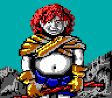
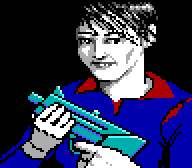
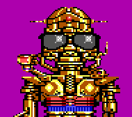

The complete Wasteland NPC List Version 1.0
Compiled by Alexander J. Pirchl.

*********************************************************************

JACKIE:
ST= 8 IQ= 10 LK= 8 Skills:
SP= 8 AGL= 8 DEX=8 1 Knife fighting
CHR=12 SKP=3 1 Brawling
RANK= Private 1 Pugilism
MaxCon= 10 $= 10 1 Swim
Female U.S. 1 Periception
1 Silent movement
Equipment: Knife, Canteen, Match;
Location: In the northeast of the cave in Highpool.
*********************************************************************
DAN CITRINE:
ST= 11 IQ= 12 LK= 11 Skills:
SP= 13 AGL=10 DEX= 12 1 Clip pistol
CHR= 13 SKP= 4 1 Knife fighting
RNK= Private 1st Class 2 Pugilism
MaxCon= 16 $= 0 1 Swim
Male U.S. 1 AT weapon
2 Gamble
1 Confidence
Equipment:-
Location: Held captive (2nd floor NE corner) in the Courthouse in
Quartz (use your canteen to revive him).
*********************************************************************
MAYOR PEDROS:
ST= 16 IQ= 14 LK=12 Skills:
SP= 10 AGL= 9 DEX= 11 2 Brawling
CHR= 13 SKP= 4 2 Clip pistol
RNK= Private 1st Class 2 Pugilism
MaxCon= 18 $= 0 1 Rifle
Male Mexican 1 Swim
1 Assault rifle
2 Acrobat
3 Confidence
3 Bureaucracy
Equipment:-
Location: Prison cell on the 3rd floor of the Courthouse in Quartz.
*********************************************************************
FELICIA:
ST= 12 IQ= 13 LK= 13 Skills:
SP= 10 AGL= 9 DEX= 11 2 Climb
CHR= 13 SKP= 3 1 Clip pistol
RNK= Private 1st Class 1 Knife fighting
MaxCon= 16 $= 0 2 Swim
Female U.S. 2 Picklock
2 Forgery
Equipment:-
Location: Held captive in the SE of Ugly's Hideout in Quartz (use
2 x Bomb Disarm to free her).
*********************************************************************
ACE:
ST= 17 IQ= 18 LK= 20 Skills:
SP= 13 AGL= 14 DEX= 15 2 Climb
CHR= 13 SKP= 6 2 Clip pistol
RNK= Specialist 2 Pugilism
MaxCon= 30 $= 0 2 Rifle
Male U.S. 1 Swim
1 Silent movement
1 SMG
2 Demolitions
2 Brawling
Equipment:-
Location: Locked up in the cell in Ugly's Hideout (entrance to the
cell is behind the bar). Note: Ace can repair the Jeep.
*********************************************************************
MORT:
ST= 14 IQ= 15 LK= 18 Skills:
SP= 12 AGL= 13 DEX= 14 1 Brawling
CHR= 19 SKP= 5 3 Confidence
RNK= Senior Specialist 2 Bureaucracy
MaxCon= 31 $= 0 2 Gamble
Male U.S.
Equipment:-
Location: In the Police Station in Needles in the cell to the east.
*********************************************************************
RALF:
ST= 12 IQ= 8 LK= 14 Skills:
SP= 9 AGL= 16 DEX= 12 2 Brawling
CHR= 6 SKP= 2 1 Knife fighting
RNK= Specialist 1 Swim
MaxCon= 18 $= 0 1 Clip pistol
Male U.S.
Equipment:-
Location: In the torture chamber (NW) of the Temple of Blood in
Needles. Turn off the laser to free him.
*********************************************************************

CHRISTINA:
ST= 17 IQ= 15 LK= 17 Skills:
SP= 13 AGL= 14 DEX= 17 3 Brawling
CHR= 13 SKP= 3 2 Climb
RNK= Senior Specialist 3 Clip pisto
MaxCon= 30 $= 200 2 Rifle
Female U.S. 3 SMG
2 AT weapon
3 Assault rifle
3 Silent movement
2 Knife throwing
3 Alarm disarm
Equipment: Rad Suit, UZIsmg Mark 27,Throwing Knife,
Canteen, Mangler, VP91Z 9mm Pistole,
Geiger Counter, Snake squeezin;
Location: Downtown Needles between the Acapulco Club
and the ammo shop.
*********************************************************************
COVENANT:
ST= 20 IQ= 18 LK= 15 Skills:
SP= 15 AGL= 17 DEX= 20 3 Brawling
CHR= 14 SKP= 4 4 Climb
RNK= Grenadier Major 4 Clip pistol
MaxCon= 40 $= 0 4 Rifle
Male U.S. 5 Assault rifle
3 AT weapon
3 Silent movement
4 Medic
Equipment:-
Location: In the Vegas Jail (building in the NE of the Vegas map).
Use Picklock to free him.
*********************************************************************
DR. MIKE SCOT
ST= 16 IQ= 21 LK= 13 Skills:
SP= 9 AGL= 10 DEX= 14 5 Doctor
CHR= 12 SKP= 2 5 Bureaucracy
RNK= Corporal 2 Forgery
MaxCon= 35 $= 20 2 Confidence
Male U.S. 4 Gamble
2 Periception
1 Knife fighting
3 Knife throwing
Equipment: Robe, Knife;
Location: Temple of the Mushroom Cloud (Las Vegas), waiting area in
front of the Hospital (SE).
*********************************************************************
MAD DOG FARGO:
ST= 18 IQ= 19 LK= 19 Skills:
SP= 16 AGL= 19 DEX= 20 2 Clip pistol
CHR= 18 SKP= 4 3 Pugilism
RNK: Lance Corporal 2 Swim
MaxCon= 38 $= 0 3 Periception
Male U.S. 4 Assault rifle
1 AT weapon
1 SMG
2 Picklock
1 Silent movement
Equipment:-
Location: In the SE of the Darwin Village Bar. Cure him with Anti-
toxin.
*********************************************************************
METAL MANIAC:
ST= 19 IQ= 20 LK= 18 Skills:
SP= 17 AGL= 19 DEX= 20 3 Brawling
CHR= 18 SKP= 4 1 Climb
RNK= Command Corporal 3 Periception
MaxCon= 40 $= 0 3 AT weapon
Male U.S. 3 SMG
1 Bomb disarm
1 Safecrack
1 Cryptology
1 Metallurgy
2 Electronics
Equipment:-
Location: In the SE of the Darwing Village Bar. Cure him with Anti-
toxin.
*********************************************************************
REDHAWK:
ST= 12 IQ= 18 LK= 12 Skills:
SP= 12 AGL= 12 DEX= 20 3 Climb
CHR= 15 SKP= 0 4 Periception
RNK= Private 4 Knife throwing
MaxCon= 60 $= 0 3 Knife fighting
Male Indian 2 Swim
Equipment:-
Location: In the Jail of the Guardians Citadel.
*********************************************************************

VAX:
ST= 30 IQ= 30 LK= 40 Skills:
SP= 20 AGL= 24 DEX= 25 3 Cyborg tech
CHR= 20 SKP= 0 5 Energy weapon
RNK= Lance Corporal 3 Clone tech
MaxCon= 60 $= 1000 4 Doctor
Male U.S. 10 Toaster repair
5 Electronics
Equipment: Power armour, Laser rifle, 5 Power packs;
Location: You can build VAX (he is a robot) at the robot assembly
facility in Base Cochise.
*********************************************************************
I hope I got them all (and all right), if someone knows another NPC
or locates an error in this file, please notify me.
Wasteland and all Wasteland artwork are Copyright © 1986-88 Interplay
Productions, Inc. All rights reserved.
Last updated: February 12, 1999
Alexander J. Pirchl [e-mail]
Ranger Ben [e-mail]